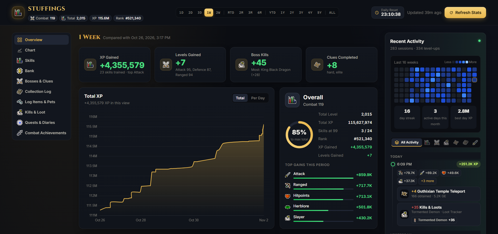

OSRS Dashboard
A progress dashboard for your own Old School RuneScape account that runs on your own computer.

OSRS Dashboard combines the official hiscores with the files the OSRS Data Sync RuneLite plugin saves on your computer. It shows XP, bosses, your bank, collection log, kills and loot, quests, diaries and combat achievements, and keeps your full history on your own computer.
Syncing between your computers
If you play on two computers, the dashboard can keep both up to date through your own Google Drive. After you connect Google Drive once on each computer, every Update saves a sync file to a hidden folder that only this app can use, and merges the file from your other computer. The app can't see or change any of your other Drive files. See the privacy policy for details.
Download and source code
Downloads, instructions and the full source code are on GitHub: github.com/slappingpikachu/runescape-dashboard.